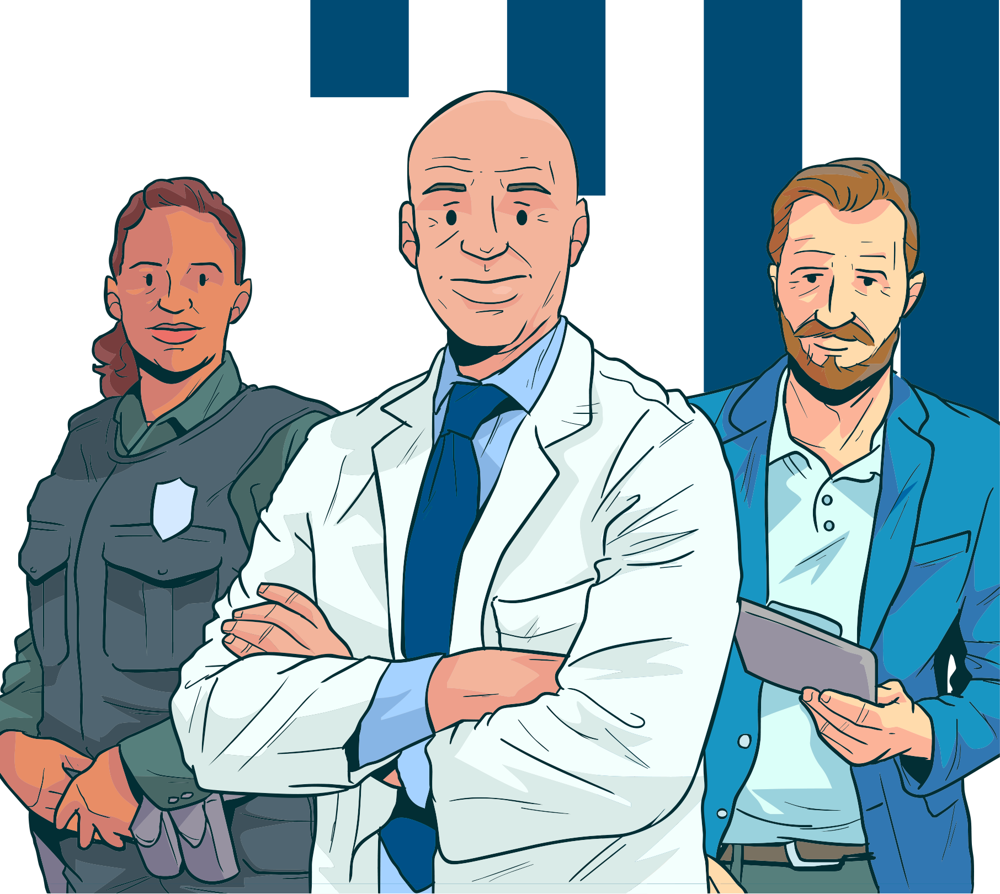

Introdução
Olá, estudante!
Esta é a última aula a respeito das doenças e agravos em saúde transmissíveis no sistema prisional. Portanto, este módulo está acabando e já iremos para o último módulo de nosso curso.
Neste momento, estudaremos a covid-19, doença surgida em 2019, em decorrência da ação do vírus SARS-Cov-2 nas células do corpo humano.
Bons estudos!